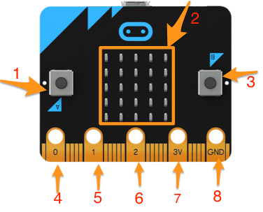

Homework tasks
1 Homework
Homework 1
- BBC Micro:bit is in fact a smaller than a credit card computer.
- The image below shows the front of a BBC Micro:bit, which has some inputs and outputs (numbered with red colour).

- Your homework:
- Conduct some online research, for each of the numbered parts, find out what they are and what they can be used for.
- On the back side of the BBC Micro:bit, there are some very important parts that actually make the Micro:bit a small but useful computer possible. Conduct some online research to find out four important parts on the backside of a BBC Micro:bit and explain their purposes.
- Answers to be submitted as a text file or image for the homework 1 badge on BourneToLearn.
Homework 2
- Tom has made the following code that creates a custome image. Tom has flashed his code to his Micro:bit. There were no errors but the image did not show. Can you describe what Tom needs to do in order for him to display the image on his Micro:bit?
from microbit import * while True: mystryImage = Image("00900:" "09090:" "90909:" "00900:" "00900") display.show(mystryImage) - Charlie has made the following code so that the LEDs in the first column will light up in turn, starting from the first LED, and as the LEDs "running" down the column, their brightness is also expected to get brighter. This pattern should repeat for ever. The following code worked once then an error occurred. Can you explain why and suggest how to fix?
from microbit import * howBright=0 while True: y=0 while y < 5: display.set_pixel(0, y, howBright) y += 1 howBright += 1 sleep(150) display.clear() - Ella has made the following code and it works very well. Can you explain what her code does?
from microbit import * x=0 howBright=9 while True: y=0 while y < 5: display.set_pixel(x, y, howBright) x += 1 sleep(150) display.clear() if x==5: x=0 y += 1
Homework 3 - Literacy Task
- BBC Micro:bit is the BBC's most ambitious education initiative in 30 years. Conduct some online research and write a 200 words on the following points:
- What exactly is the BBC Micro:bit initiative and how they made it possible?
- What is the BBC expecting to achieve by starting this initiative?
- In your own words, in your own opinion, what impact could the initiative has on school children and why?
- your writting will be assessed on spelling and grammar.